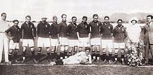
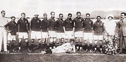

Cruzeiro
cruzeiro ganhou a libertadores O Cruzeiro Esporte Clube, popularmente conhecido como Cruzeiro, é um clube de futebol brasileiro sediado em Belo Horizonte, Minas Gerais
cruzeiro ganhou a libertadores O Cruzeiro Esporte Clube, popularmente conhecido como Cruzeiro, é um clube de futebol brasileiro sediado em Belo Horizonte, Minas Gerais
Curiosidades sobre Cruzeiros: Moeda e Autoridade: A moeda oficial a bordo de um cruzeiro pode ser o dólar ou o euro, dependendo do destino. O comandante do navio é a autoridade máxima a bordo. Estabilidade e Enjoos: Navios de cruzeiro podem ter algum movimento, sendo comum o uso de remédios contra enjoos. No entanto, as novas tecnologias ajudam a minimizar o balanço. Entretenimento: Os cruzeiros oferecem uma vasta gama de atividades, incluindo shows, teatros, cassinos, festas, piscinas, atividades esportivas e muito mais, tornando-se uma experiência completa de viagem. Segurança: Navios de cruzeiro são considerados seguros, com protocolos de emergência e segurança a bordo. Economia Local: Os cruzeiros trazem benefícios econômicos para as regiões visitadas, com os gastos dos turistas e da tripulação, além da aquisição de insumos locais. Atividades para Todas as Idades: Cruzeiros oferecem atividades e entretenimento para todas as idades, incluindo áreas infantis e atividades direcionadas a diferentes grupos de idade. Dessalinização da Água: Para suprir as necessidades de água potável, os navios de cruzeiro utilizam o processo de dessalinização, que consiste em retirar a água do mar e tratá-la. Área de Helicópteros: Muitos navios possuem uma área no deck da piscina que pode receber helicópteros em caso de emergência. Alimentação: Um cruzeiro de sete dias pode consumir a quantidade equivalente a cinco contentores de alimentos, incluindo 300 kg de batatas por dia. Tripulação: A tripulação de um navio de cruzeiro pode ser composta por pessoas de várias nacionalidades, com contratos de trabalho que podem durar de seis a oito meses. Estabilidade: Os navios possuem compartimentos que podem ser preenchidos com água do mar para aumentar o peso e estabilidade em caso de mares agitados. Energia: Os navios de cruzeiro possuem geradores de energia que podem abastecer uma cidade com mais de 80 mil habitantes. Lixo: O lixo dos navios é classificado como lixo negro (hospitalar e dos banheiros) e lixo cinza (o restante). O lixo cinza pode ser descartado no mar a partir de 22km da costa, enquanto o lixo negro precisa ser tratado antes do descarte. Pontos de Interesse: Cruzeiros são uma forma eficiente de visitar vários destinos, evitando o estresse de planejar múltiplas viagens separadas e a necessidade de trocar de aeroporto.